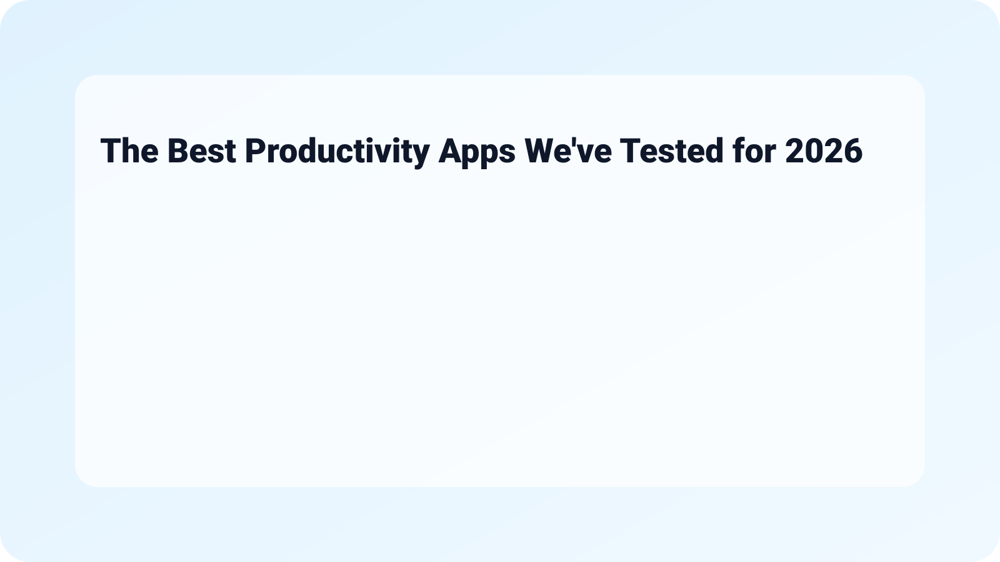

The Best Productivity Apps We've Tested for 2026 - PCMag
In the fast-paced world we live in, staying productive is more important than ever. This is why we've compiled a list of The Best Productivity Apps We've Tested for 2026 - PCMag. These tools can help streamline tasks, enhance focus, and ultimately improve your efficiency, whether at work, home, or on the go.
What Happened?
As we continue to navigate an increasingly digital landscape, productivity apps have evolved significantly. 2026 brings forth innovations that cater to diverse work styles and needs, ensuring users can select tools that work specifically for their workflows. From advanced project management systems to simple to-do list applications, there's something for everyone.
Why It Matters
The right productivity app can make a significant difference in achieving your goals. With the added pressures of remote working and hybrid arrangements, selecting an effective tool can help reduce stress and enhance focus, making these apps essential in today's work environment.
Quick Checklist for Choosing the Right App
- Identify your specific needs (task management, time tracking, etc.)
- Check for compatibility with devices and existing tools
- Evaluate user interface and ease of use
- Consider price and subscription options
- Read user reviews for real-world feedback
Top Productivity Apps to Consider in 2026
Let’s look at some standout apps that have caught our attention this year:
- Trello - Perfect for visual project management. Trello's card-based system allows for easy collaboration. Its integrations with other tools provide a seamless experience for teams.
- Todoist - A versatile to-do list app that helps manage tasks with ease. It comes with a clean interface and offers features like recurring tasks and project labeling.
- Notion - Dubbed the all-in-one workspace, Notion combines note-taking, project management, and knowledge management. Its flexibility allows users to create personalized workflows.
- RescueTime - Essential for analyzing how you spend your time. This tool tracks your activities and provides insights to identify distractions and improve time management.
- Evernote - A classic note-taking app that has evolved over the years, it offers powerful search features and organizational tools to keep your notes accessible.



Practical Tips for Maximizing Productivity Apps
Getting the most out of these productivity apps can be as crucial as the apps themselves. Here are some practical tips:
- Set clear goals - Before diving into an app, establish what you are trying to achieve.
- Consistency is key - Regularly use the app to form habits and maintain momentum.
- Integrate with other tools - Take advantage of integrations to create a holistic productivity ecosystem.
- Regularly review your systems - Ensure the app still meets your needs as projects or personal goals evolve.

Frequently Asked Questions
- Can I use multiple productivity apps together?
Yes, many users find that combining different apps caters to their diverse needs. Just make sure they integrate smoothly. - What’s the best app for team collaboration?
Trello and Notion are excellent for teamwork, providing features that help track project progress and enhance communication. - Are these apps available on mobile devices?
Most productivity apps, including Todoist and Evernote, have mobile versions that allow you to stay productive on the go. - Do these apps offer free trials?
Many productivity apps provide free versions or trial periods, so you can explore their functionalities before committing to a subscription.

Conclusion
As we step into 2026, the landscape of productivity apps expands, offering innovative features that cater to the changing demands of users. Whether you're managing a team project or organizing personal tasks, these tools can help simplify and optimize your workflows. Remember to explore options and find which apps align best with your working style.
For those interested in tech trends, check out our article on 5 Things About Vivo’s next phone will launch with a professional camera rig (2026). Additionally, for a lighter approach to relationships through technology, take a look at 10 best free dating apps in January 2026 - Mashable.

Related on MingMong: 5 Things About Vivo’s next phone will launch with a professional camera rig (2026) and 10 best free dating apps in January 2026 - Mashable
Source: Link